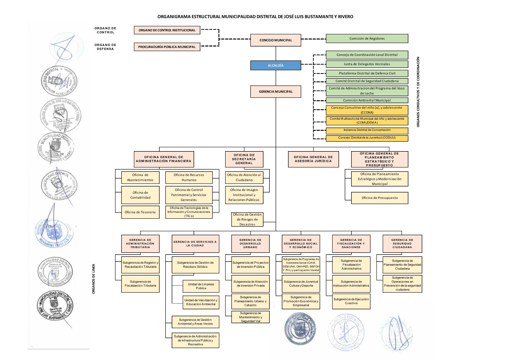
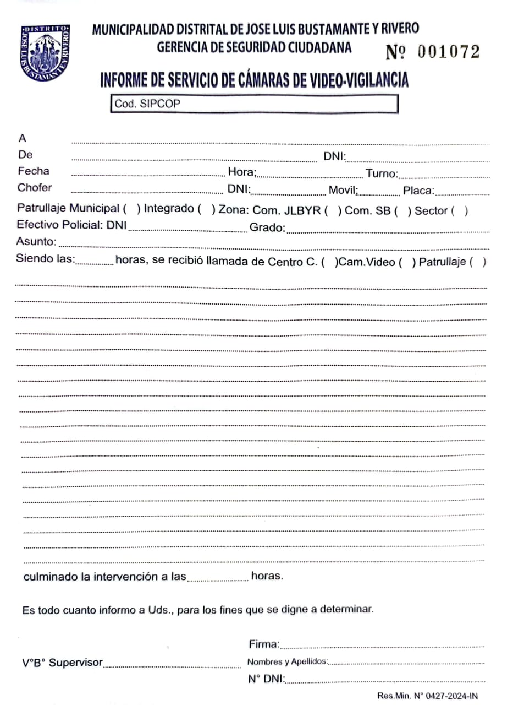
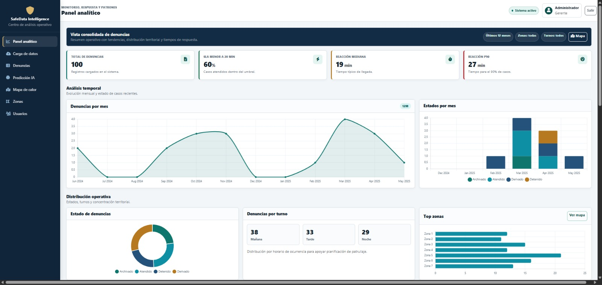
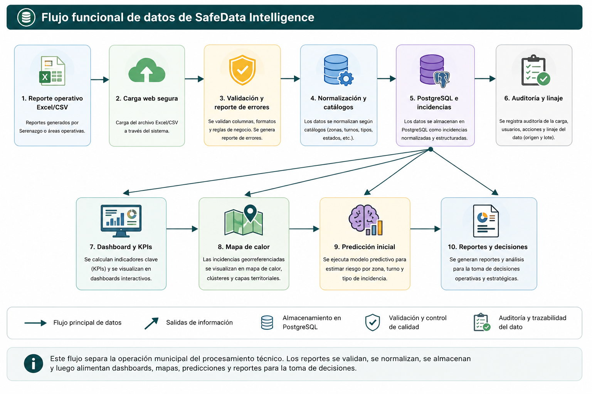
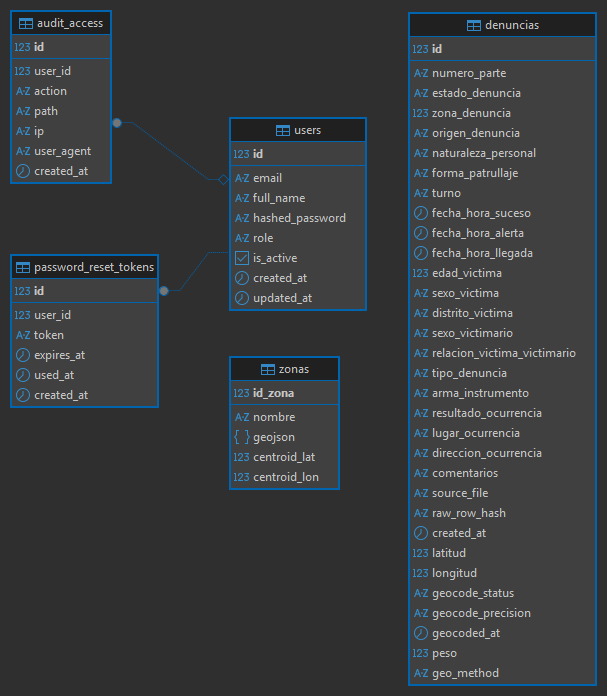
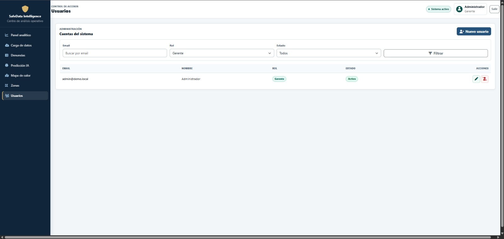
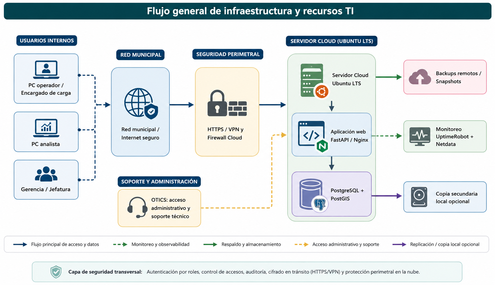
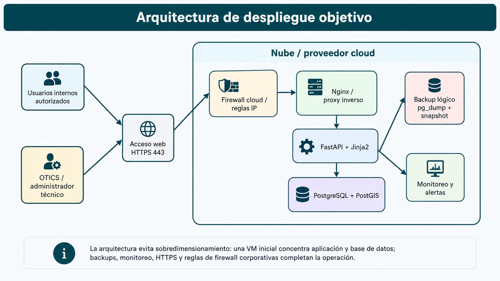
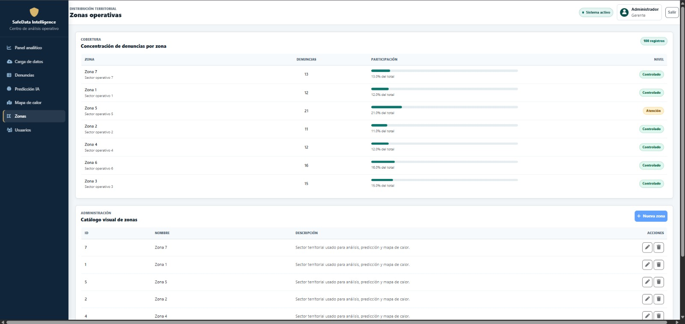

Excel y reportes manuales
Bajo costo inmediato y uso conocido.
Limitación Alta carga manual, errores, baja trazabilidad y dependencia de personas. Sirve como respaldo temporal, no como servicio TI.Municipalidad Distrital de José Luis Bustamante y Rivero
La operación puede realizarse desde la sede municipal principal y desde un punto operativo de Seguridad Ciudadana en Simón Bolívar.
SafeData no reemplaza denuncias formales ni funciones de la PNP; organiza información municipal preventiva y reportes agregados para coordinación.

Los reportes existen, pero el ciclo todavía depende de consolidación manual, criterios no uniformes y baja trazabilidad.

La propuesta no se limita al desarrollo del sistema. Define cómo se gestionan infraestructura, software, datos, personas, seguridad, continuidad, costos, SLA e indicadores para que SafeData opere como servicio TI municipal.
Por eso se incorporan responsables, controles, presupuesto, riesgos, monitoreo, respaldo, mantenimiento y medición de resultados.
El diagnóstico muestra que SafeData no solo requiere software. Para operar como servicio municipal, también necesita datos confiables, responsables definidos, infraestructura segura, continuidad y medición.
En resumen, cada brecha se transforma en una decisión de gestión: qué recurso se necesita, quién lo administra, cómo se controla y cómo se mide.
Bajo costo inmediato y uso conocido.
Limitación Alta carga manual, errores, baja trazabilidad y dependencia de personas. Sirve como respaldo temporal, no como servicio TI.Herramientas maduras y soporte especializado.
Limitación Mayor costo, licencias, dependencia de proveedor y posible sobredimensionamiento. Viable a futuro si crecen presupuesto y escala.Adaptación al proceso municipal y control del dato.
Condición Requiere gobierno, seguridad, soporte, mantenimiento y operación formal. Equilibrio entre costo, control, alcance y mejora gradual.La solución convierte reportes municipales en indicadores, mapas, predicción inicial y reportes agregados.
El prototipo demuestra viabilidad; producción exige HTTPS, roles, auditoría, backups, monitoreo, pruebas y soporte.






La seguridad debe cubrir usuarios, APIs, exportaciones, auditoría y tratamiento responsable de datos personales.

La matriz RACI separa propiedad funcional, análisis, operación y soporte técnico.
| Proceso | GSC | Planeamiento | Analista | OTICS |
|---|---|---|---|---|
| Definir catálogos | A | R | C | I |
| Cargar y validar reportes | I | A | R | C |
| Usuarios y roles | A | C | C | R |
| Incidente técnico | I | I | C | R/A |
| Backups y restauración | I | C | C | R/A |
| Revisar SLA y reportar valor | A | R | C | R |
La continuidad debe probarse, registrarse y revisarse; no basta con programar un respaldo.
La estimación distingue costos obligatorios, opcionales y de escalamiento para iniciar con inversión controlada y ampliar según uso real.
La arquitectura cloud facilita acceso centralizado, administración remota y continuidad entre la sede principal y el punto operativo Simón Bolívar, sin depender de un servidor físico ubicado en una sola oficina.